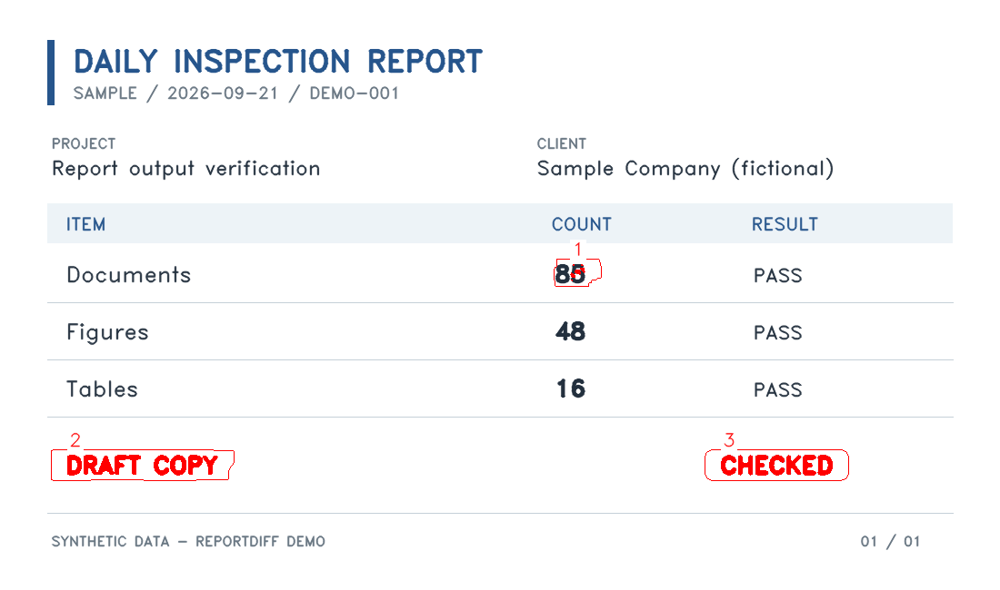
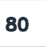
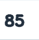

ReportDiff · 比較レポート
帳票の比較結果 相違あり
2026-09-21 12:00:00 +09:00 · reportdiff 0.1.2
A · 基準
inspection-a.png
PNG · 1 ページ
B · 比較
inspection-b.png
PNG · 1 ページ
- 比較したページ
- 1
- 相違のあるページ
- 1
- 相違箇所
- 3
- 位置ずれを吸収した数
- 0
比較・相違のページ数は今回の出力対象分です。片側だけのページも相違に含みます。吸収数は位置ずれとして相違から除いたグループ数です。
警告
警告はありません。
使った設定・除外領域
- PDF の描画解像度
- 300 dpi
- 画像の換算解像度
- 300 dpi
- 位置ずれの許容幅
- 0.15 mm
- 色の差のしきい値
- 3
- コントラスト比例の許容係数
- 0.3
- インクの局所背景半径
- 1.5 mm
- インクの明度差のしきい値
- 25
- クラスタの結合距離・横
- 3 mm
- クラスタの結合距離・縦
- 1 mm
- クラスタの最小画素数
- 4
- ページのクラスタ数上限
- 500
- 差分の割合の上限
- 0.3
- クラスタの読み順の帯幅
- 5 mm
- 移動の探索距離（各軸）
- 5 mm
- 移動の一致度の下限
- 0.98
- 移動候補の次点との差
- 0.02
- 移動テンプレートの余白
- 1 mm
- 全体補正
- 無効
- 全体補正の探索距離（各軸）
- 5 mm
- 全体補正の一致度の下限
- 0.98
- 全体補正の次点との差
- 0.02
- 全体補正の改善量の下限
- 0.05
- 全体補正の粗い格子の長辺上限
- 800 要素
- 全体補正の復元段階の探索半径
- 2 要素
- 全体補正の支持区画数の下限
- 3
- 全体補正の支持行数の下限
- 2
- 全体補正の支持列数の下限
- 2
- 全体補正の区画内の黒換算面積
- 1 mm²
- PDF 注釈の文字要素数上限（ページ・片側）
- 100000
- PDF 注釈の単語数上限（ページ・片側）
- 20000
- PDF 注釈の本文上限（クラスタ・片側）
- 2000 Unicode 文字
- PDF 注釈の行の重なり率の下限
- 0.5
- 切り出し画像の余白
- 2 mm
除外領域
除外領域はありません。
ページ別の結果
重ね描きの赤は差分・輪郭・番号、黄色は除外領域です。画像を選ぶと元の大きさで開きます。
追加・削除などの分類は A→B のインクの有無からの推定です。背景・塗りや判定が明確でない差は「変更」とします。「移動（推定）」は位置を変えると内容が一致し、対応が一意と判断できた箇所です。移動の向きは A→B です。移動も相違として数えます。切り出しの緑は A だけのインク、赤は B だけ・両方のインクやその他の差分です。
PDF テキストは元ファイルの文字情報を添えた補足です。画像の文字認識結果ではなく、不可視の文字や変更されていない部分を含むことがあります。複雑な段組みや縦書きの読み順は再現しません。画像と併せて確認してください。
1 ページ 相違あり
- 画像サイズ
- 1100 × 650 px
- 生の差分の画素数
- 3699
- 除外したノイズの数
- 0
- 位置ずれを吸収した数
- 0
- 吸収に使った最大ずれ
- 0 px

相違箇所 3 件
一覧は横にスクロールできます。
| 番号・分類 | 位置・大きさ（mm） | 画素数 | A · 基準 | B · 比較 | 差分 |
|---|---|---|---|---|---|
| 1 変更 | X 53.09 · Y 24.64 幅 1.44 × 高さ 1.61 | 87 |  PDF テキスト テキスト注釈なし |  PDF テキスト テキスト注釈なし | |
| 2 削除（推定） | X 6.27 · Y 42.42 幅 14.05 × 高さ 1.95 | 1945 | PDF テキスト テキスト注釈なし | PDF テキスト テキスト注釈なし | |
| 3 追加（推定） | X 67.14 · Y 42.42 幅 10.41 × 高さ 1.95 | 1667 | PDF テキスト テキスト注釈なし | PDF テキスト テキスト注釈なし |
{kind=link}
{kind=link}
{kind=link}
{kind=link}
{kind=link}
{kind=link}
{kind=link}
{kind=link}
{kind=link}